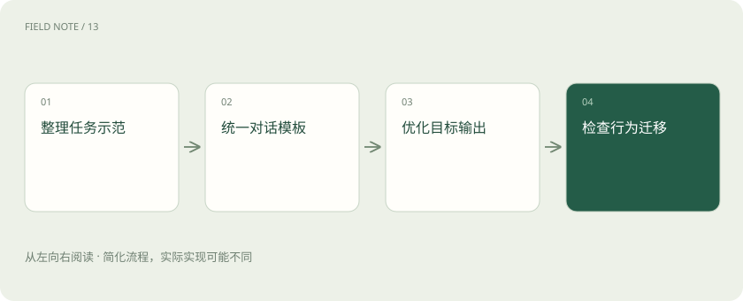

先说这篇在讲什么
模型接触过很多文字，还不一定会按照你的方式办事。你可以给它大量成对示范：一边是要求和材料，一边是合适回答。训练让它更倾向产生这样的回答，这叫监督微调，也常缩写成 SFT。教材怎么写，学到的习惯也会受影响。
先看一个具体例子
维修摘要样例若每次都给肯定诊断，模型可能学会材料不够也下结论。补上“缺少温度记录，需要进一步确认”的示范，才是在教合适的不确定表达。
遇到陌生概念，可以先读
展开前置阅读建议
打个比方，帮助理解
这是帮助理解的比方，实际过程以正文说明为准。
一图看懂

监督微调中的“监督”是什么
监督信号指训练时已经给出的目标示范，例如问题配上期望回答。模型生成内容与目标比较后，参数继续更新。它可以学习术语、格式、任务步骤和表达风格。这里仍然是训练，不是用户在聊天里临时贴一份参考资料。
示范怎么组织，也会影响它学什么
一段对话里有用户、助手和工具返回，角色要分清。聊天模板负责按模型预期格式组织这些内容。训练还需要决定在哪些位置计算误差，也就是要求模型模仿哪些内容。如果把用户问题、工具资料和助手答案混成一团，训练重点可能偏离你真正希望它完成的回答行为。
教材里的坏习惯也会被模仿
示范总是过度自信，模型就可能学着不论材料多少都下结论；示范总带某句开场白，也可能把它误当成必须步骤。应覆盖充分信息、缺失信息、容易混淆和陌生表达，让“怎样正确处理”比表面格式更完整。修改前先查教材，往往比只怪参数量更直接。
看新任务，而不是只重做示范
保留没有参与训练和调试的任务，检查模型是否能应对新问法、缺少条件和异常输入。还要看它适应某种风格后，其他能力有没有下降。如果只把示范原题做得更像模板，只能说明模仿更熟练，还不足以说明能稳定完成真实工作。
放在一起对比
| 方式或概念 | 主要作用 | 关键边界 |
|---|---|---|
| SFT | 学习期望输出示范 | 示范质量决定行为信号 |
| 偏好训练 | 学习回答间的优劣 | 依赖比较标准 |
读完先记住这一句
别踩这个误区
想一想
给模型很多客服示范，为什么还要有“资料不足”的例子？
因为模型会学示范里反复出现的行为。如果所有示范都肯定作答，就容易把必须给结论误当成好助手的标准。
关联阅读
资料与边界
本文为原创知识讲解。类比和图示经过简化；示例数字不代表实测或报价。整理日期：2026-11-04。文末列出对应技术的原始资料，具体功能与版本支持请以原文为准。
按完整目录逐篇阅读